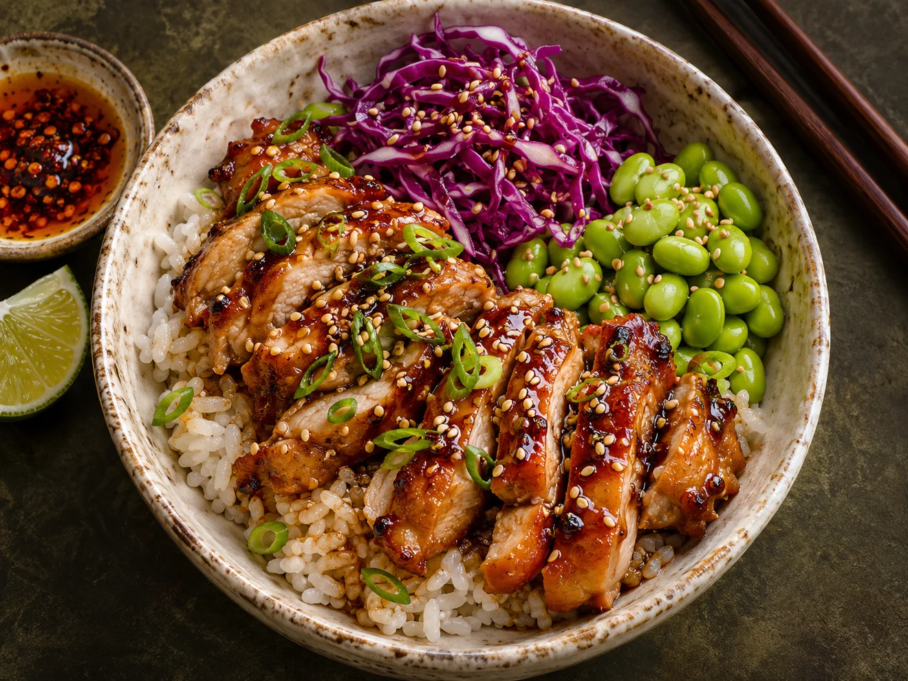

THE HOME COOK’S FIELD GUIDE
Good food.
Less guesswork.
Know what to buy, what to mix, and how to cook it. Your kitchen cheat sheet, all in one place.
Try

Know what to buy, what to mix, and how to cook it. Your kitchen cheat sheet, all in one place.
